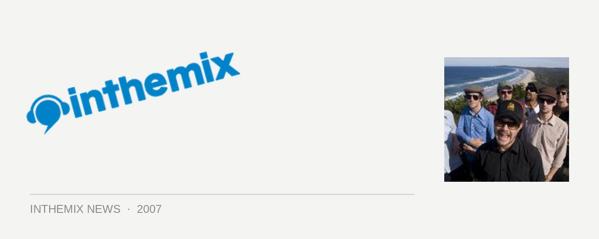

First round acts for Island Time festival
Held on Stradbroke Island from 19th to 21st of October, the Island Time festival features the best of Australia and New Zealand’s reggae, soul and dub performers over three days. With the festival site situated on the Point Lookout on the picturesque island, only 90 minutes from Brisbane, it is right next to Home Beach and takes place right in the peak of the whale migration season, offering punters a unique interaction between music and nature as the migrating whales and dolphins bask nearby.
Tickets are on sale now for the Island Time Festival, from the 19th to the 21st October at Point Lookout, Stradbroke Island. Check the lineup and stay tuned for another big announcement mid September.
Black Seeds
Rastawookie
Red Eyes Sound System
Natty Sistren Sound System
Kooii
Dynamic Thrills
Kafka
Ruby Blue
Dubmarine
Schoolfight
Tommee
Yeshe
Dubshack
One For One
Krazy Dayv (from Rubadub Sound)
Grassroots Street Orchestra
Cool Calm Collective
Georgia Potter
CC The Cat
Rudekat Sound System
Scuba D
Polytoxic
Pipi Lips
Quandamooka
Clara Durbidge
Paula Boo
Yulu-burri-bah Dancers
K-gari Dancers
Paul Abad
Zennith
Peepshow